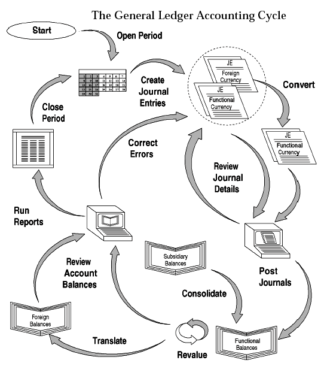
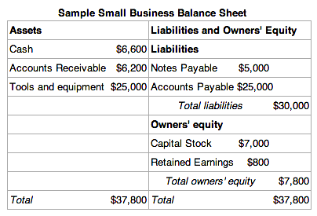
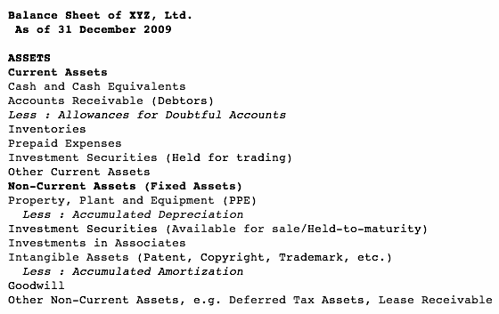
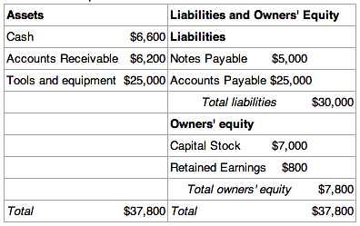

Cash and cash equivalents are the most liquid type of company assets used by businesses to settle debts and purchase goods.
Define the role cash or cash equivalents play within a business
Cash is the most liquid of all company assets. It is what a business generally uses to settle debts and acquire goods. Cash is generally any currency a business owns. Any currency the business has at its headquarters, branches, or in its bank accounts is included as part of its cash account on its financial statements .
Cash equivalents are also generally included with cash on a business's financial statements. They are securities that can easily and quickly be converted into cash. For an investment to be considered a "cash equivalent," it must mature within three months. A financial instrument's maturity occurs on a specific date. At that time, the person who owns the instrument receives whatever amount of money the instrument promised to pay in addition to any remaining interest payments.
For an instrument to be considered a cash equivalent, the risk of the investment losing its value must also be insignificant. While publicly traded stock could be easily sold and converted into cash, it would not be considered a cash equivalent because there is a risk that its value could decrease.
Cash can also be used as a reserve against unforeseen business problems, such as a momentary decrease in revenues or a downturn in financial markets. Many transactions involve cash, so it is arguably one of the most important factors in business. Since cash can also easily be stolen or mishandled, it is important to maintain a strict series of internal controls to ensure that these assets are not lost.
Types of cash include currency, funds in bank accounts, and non-risky financial instruments that are readily convertible to cash.
Differentiate between negotiable instruments, CDs and other cash equivalents
Cash and cash equivalents are not just the amount of currency that a business has in its cash registers and bank accounts; they also include several different types of financial instruments. Cash equivalents include all undeposited negotiable instruments (such as checks), bank drafts, money orders and certain certificates of deposit.
A certificate of deposit, or CD, is a financial product offered by banks to their customers. CDs are similar to savings accounts in that both types of accounts are insured by the FDIC up to a value of \$250,000. However, unlike with a savings account, whatever funds a consumer puts into a CD generally cannot be withdrawn prior to a certain date without incurring significant penalties. Demand CDs allow a customer to withdraw funds from the CD whenever the customer wants without incurring a penalty. As a result, demand CDs generally have lower interest rates than CDs that allow the bank to hold onto the money for an agreed upon term. Generally only demand CDs or CDs that will mature within three months of when the financial statements are prepared are cash equivalents.
Cash equivalents can also include government and corporate bonds, marketable securities and commercial paper. However, these types of instruments are only included in cash if they mature within three months from when the the financial statements are prepared and there is a minimal risk of these investments losing their value. So if a corporate bond matures within three months, but the company that issued it may not be able to settle the debt, one would not be able to include that as a cash equivalent.
Other investments and securities that are not cash equivalents include postage stamps, IOUs, and notes receivable because these are not readily converted to cash.
Cash and cash equivalents are reported in the current asset section of a business's balance sheet.
Cash is an asset, which means it is included in a business's balance sheet . Since cash is highly liquid and can be used immediately to settle a business's debts, it is included in the current asset section of the balance sheet. Cash is reported on the balance sheet at its current monetary, or fair, value to accurately reflect the entity's value on the statement. .
A company's general ledger may have several accounts detailing how much cash it has. For example, it might have one account for petty cash, another for how much cash it has in one bank account, and another detailing how much money it has invested in a CD that will mature in less than three months. When the company's cash balance is reported on its balance sheet, all of those accounts are combined into one "cash" line item.
While the balance sheet may combine all cash and cash equivalents into one number, a business can provide further detail about its cash balance in the footnotes to the financial statements. These disclosures come after the financial reports are presented and can be used to explain specific items of financial activity. With regards to cash, the footnotes can explain how much of the cash balance was composed of actual currency and how much was cash equivalents.
A balance sheet is different from other financial statements because it describes a specific moment in time while the other statements describe activity over a period of time. As a result, the cash value on the balance sheet will only be accurate as of the end of the business on the date listed on the statement. When you receive a balance sheet, the current balance of cash might be very different from what is reported on the statement.
Cash internal controls is a system used to promote accuracy, prevent theft, and ensure a business has enough cash to pay its debts.
Explain how internal cash controls benefit a company
Every business should have internal controls regarding its financial activities. If designed well, internal controls can prevent theft and fraud. They also ensure that a business's financial statements are accurate .
While internal control should be designed for every aspect of a business's operation, the controls for cash are arguably among the most important. Since cash is the most liquid asset and the easiest for people to convert for their own needs, it is often the easiest thing to steal or misreport. Therefore, the internal controls associated with cash must be more stringent.
According to the Committee of Sponsoring Organizations of the Treadway Commission (COSO), internal control has five components:
A bank is a good cash control because it limits employees' access to company assets and provides documentation on withdrawals and deposits.
Describe why a bank is one of the best internal controls a business can use
Using a bank is one of the best internal controls on a business's cash. Internal controls are meant to ensure that a business's assets are protected, that its financial data is accurate, and to ensure efficiency . For cash, this generally requires that the people with the ability to obtain a business's cash are limited to a few select individuals and that each transaction is recorded in detail. The documents regarding each transaction should list when each deposit or withdrawal took place, who initiated the transaction, and how much cash was involved.
As an independent third party, a bank is less susceptible to schemes by a business's employees to steal funds. Since a bank holds a business's funds, it provides a physical barrier preventing employees from accessing the cash. Most banks keep "signature cards" on hand for business accounts so its tellers are aware who can sign checks to withdraw funds. All other individuals are prevented from withdrawing cash from the business's account.
Banks generally require that every deposit is accompanied by a signed and dated deposit slip. Every withdrawal must be paired with a signed and dated check. These documents are kept by the bank to resolve any disputes that may arise regarding a transaction.
The bank generally also sends the business a monthly statement that summarizes the activity associated with the account. This statement will list all deposits and withdrawals. It will also include a copy of each transaction's documentation. Generally, the person in charge of the business's books will receive this documentation and compare it to the business's own records. If there are any differences between the business records and the bank's, the company can use the documentation enclosed with the statement to determine where the discrepancy is and contact the peopled involved with the questionable transactions.
A bank reconciliation is an internal control that ensures that the cash in its accounts equals what it has recorded in its books.
Describe how a company uses a bank reconciliation as an internal control
A bank statement only reflects a specific period of time, such as one month . However, it takes the banks time to prepare the statement and send it out. Therefore, while a bank may prepare a statement for the month of October, a business might not receive it until a week later.
As a result, a bank statement will generally not reflect the amounts that a company has on its own books. This can be due to a few reasons. The company could have issued several checks prior to the end of the period, but the check holders had not cashed the check. The business could have also received some cash amounts prior to the end of the period covered by the statement, but was unable to deposit those amounts until after the period ended. The differences could also be due to mistakes, either by the bank or in the company's books. The differences could also be due to something more troublesome, such as theft.
A bank reconciliation is a process that explains the difference between the bank statement on the amount shown in the organization's own financial records. This process is important because it ensures that any differences are due to the timing of payments and not because of a mistake or theft.
A bank reconciliation consists of two columns; one for the book balance, the other for the bank balance. The person reconciling the accounts then adjusts one column by adding deposits that had not yet been recorded and subtracting checks and other outlays that had not yet been cashed when the statement had been prepared. The reconciliation is not complete until the adjusted column equals the unadjusted column.
There may be some cases where the process reveals a legitimate transaction that was not recorded in the books. When that occurs, the person responsible for the business's books must record the transaction using a journal entry.
Due to the amount of time between when a bank statement is prepared and when it is received by a business, the document may not accurately reveal what the business actually has in terms of cash. This is why reconciling the bank statement is necessary.
A company manages its cash primarily through the use of a voucher system and bank reconciliations.
Explain how a voucher system helps a company manage their cash
Managing cash is about monitoring how it comes in and goes out . To meet this goal, a business must come up with a system that not only documents all of these transactions, but organizes those documents in such a way so that any issues are immediately noticed by management. Current liabilities are debt owed and payable no later than the current accounting period.
A voucher system is used primarily for monitoring and documenting payments made by a company to a third party. A voucher is composed of five parts.
When an obligation is about to be settled, the person in charge of the vouchers should review the other documents associated with the transaction prior to transferring the related voucher from the unpaid to paid file. The related documents generally include purchase orders, receiving reports, and invoices. These documents demonstrate that the payment was authorized, all goods and services that the business was supposed to get were received, and that the amount paid equaled the amount due.
Bank reconciliations, or the process of checking to make sure that a business's financial records on cash equals how much is in the business's bank accounts, are especially useful as a control over deposits. This type of control will be discussed in a later section.
A receivable is money owed to a business by its clients and shown on its balance sheet as an asset.
Identify a receivable
A receivable is money owed to a business by its clients and shown on its balance sheet as an asset. It is one of a series of accounting transactions dealing with the billing of a customer for goods and services that the customer has ordered. Accounts receivable is an asset which is the result of accrual accounting. In this case, the firm has delivered products or rendered services (hence, revenue has been recognized), but no cash has been received, as the firm is allowing the customer to pay at a later point in time.
Receivables represent money owed by entities to the firm on the sale of products or services on credit. In most business entities, accounts receivable is typically executed by generating an invoice and either mailing or electronically delivering it to the customer; who, in turn, must pay it within an established time frame. This is called credit terms or payment terms.
The accounts receivable departments use the sales ledger. This is because a sales ledger normally records:
The accounts receivable team is in charge of receiving funds on behalf of a company and applying it towards their current pending balances. Collections and cashiering teams are part of the accounts receivable department. While the collection's department seeks the debtor, the cashiering team applies the monies received. Factoring makes it possible for a business to readily convert a substantial portion of its accounts receivable into cash.
Receivables can generally be classified as accounts receivables or notes receivable, though there are other types of receivables as well.
Differentiate between accounts receivable, notes receivable and other receivables
Receivables can be classified as accounts receivables, notes receivable and other receivables ( loans, settlement amounts due for non-current asset sales, rent receivable, term deposits). Other receivables can be divided according to whether they are expected to be received within the current accounting period or 12 months (current receivables), or received greater than 12 months ( non-current receivables).
Accounts receivable are amounts that customers owe the company for normal credit purchases . Since accounts receivable are generally collected within two months of the sale, they are considered a current asset. Accounts receivable usually appear on balance sheets below short-term investments and above inventory.
Notes receivable are amounts owed to the company by customers or others who have signed formal promissory notes in acknowledgment of their debts. Promissory notes strengthen a company's legal claim against those who fail to pay as promised. The maturity date of a note determines whether it is placed with current assets or long-term assets on the balance sheet. Notes that are due in one year or less are considered current assets, while notes that are due in more than one year are considered long-term assets.
Accounts receivable and notes receivable that result from company sales are called trade receivables, but there are other types of receivables as well. For example, interest revenue from notes or other interest-bearing assets is accrued at the end of each accounting period and placed in an account named interest receivable. Wage advances, formal loans to employees, or loans to other companies create other types of receivables. If significant, these nontrade receivables are usually listed in separate categories on the balance sheet because each type of nontrade receivable has distinct risk factors and liquidity characteristics.
If you are operating under the accrual basis, you record account receivable transactions irrespective of any changes in cash.
Describe the journal entry to record an accounts receivable transaction
If you are operating under the accrual basis, you record transactions irrespective of any changes in cash. This is the system under which you record an account receivable. In addition, there is a risk that the customer will not pay you. If so, you can either charge these losses to expense when they occur, known as the direct write-off method, or you can anticipate the amount of such losses and charge an estimated amount to expense, known as the allowance method. The balance sheet is one of the financial reports included in a company's annual report.
Booking a receivable is accomplished by a simple accounting transaction. However, the process of maintaining and collecting payments on the accounts receivable is more complex. Depending on the industry in practice, accounts receivable payments can be received up to 10 – 15 days after the due date has been reached. These types of payment practices are sometimes developed by industry standards, corporate policy, or because of the financial condition of the client.
Account receivables are classified as current assets assuming that they are due within one year. To record a journal entry for a sale on account, one must debit a receivable and credit a revenue account. When the customer pays off their accounts, one debits cash and credits the receivable in the journal entry. The ending balance on the trial balance sheet for accounts receivable is always debit.
An example of a common payment term is Net 30, which means that payment is due at the end of 30 days from the date of invoice. The debtor is free to pay before the due date; businesses can offer a discount for early payment. Other common payment terms include Net 45, Net 60, and 30 days end of month.
Since not all customer debts will be collected, businesses typically estimate the amount of and then record an allowance for doubtful accounts which appears on the balance sheet as a contra account that offsets total accounts receivable. Two methods are available to calculate the amount of bad debt expense and allowance of doubtful accounts at the end of an accounting period -- percentage of accounts receivable or percentage of sales. When accounts receivables are not paid, some companies turn them over to third party collection agencies or collection attorneys who will attempt to recover the debt via negotiating payment plans, settlement offers or pursuing other legal action.
An example of how to calculate the allowance for doubtful accounts using the percentage of receivables method -- Assume Furniture Palace has an ending accounts receivable balance of USD 10,000 and estimates that 5% of receivables are doubtful. To adjust the allowance account for the new estimate, debit Bad Debt Expense for USD 500 (10,000 *0.05) and credit Allowance for Doubtful Accounts for USD 500.
To calculate the allowance for doubtful accounts using the percentage of total sales, estimate the percentage of sales that will be uncollectible. Furniture Palace estimates that 10% of the period's USD 20,000 total sales may not be collected. To adjust the allowance account for the new period's estimate, debit Bad Debt Expense for USD 2,000 (20,000 *0.10) and credit Allowance for Doubtful Accounts for USD 2,000.
Receivables of all types are normally reported at their net realizable value, which is the amount the company expects to receive in cash.
Differentiate between the direct write-off method and the allowance method of accounts receivable valuation
Receivables of all types are normally reported on the balance sheet at their net realizable value, which is the amount the company expects to receive in cash. Receivables are recorded at net realizable value.
Business owners know that some customers who receive credit will never pay their account balances. These uncollectible accounts are called bad debts. Companies use two methods to account for bad debts: the direct write-off method and the allowance method.
For tax purposes, companies must use the direct write-off method, under which bad debts are recognized only after the company is certain the debt will not be paid. Before determining that an account balance is not collectible, a company generally makes several attempts to collect the debt from the customer.
Recognizing the bad debt requires a journal entry that increases a bad debts expense account and decreases accounts receivable. If a customer named J. Smith fails to pay a \$100 balance, for example, the company records the write-off by debiting bad debts expense and crediting accounts receivable from J. Smith.
Under the allowance method, an adjustment is made at the end of each accounting period to estimate bad debts based on the business activity from that accounting period. Established companies rely on past experience to estimate unrealized bad debts, but new companies must rely on published industry averages until they have sufficient experience to make their own estimates.
The adjusting entry to estimate the expected value of bad debts does not reduce accounts receivable directly. Accounts receivable is a control account that must have the same balance as the combined balance of every individual account in the accounts receivable subsidiary ledger.
Since the specific customer accounts that will become uncollectible are not yet known when the adjusting entry is made, a contra-asset account named allowance for bad debts, which is sometimes called allowance for doubtful accounts, is subtracted from accounts receivable to show the net realizable value of accounts receivable on the balance sheet.
Notes Receivable represents claims for which formal instruments of credit are issued as evidence of debt, such as a promissory note.
Explain the purpose of a note receivable and its format
Notes Receivable represents claims for which formal instruments of credit are issued as evidence of debt, such as a promissory note. Often a business will allow a customer to convert their overdue accounts into a notes receivable. Doing so gives the debtor more time to pay. Occasionally, the notes receivable will include a personal guarantee by the owner of the debtor.
A notes receivable normally requires the debtor to pay interest and extends for time periods of 30 days or longer. Notes receivable are considered current assets if they are to be paid within 1 year and non-current if they are expected to be paid after one year.
Principle-the principle is the face value of the note. The principle equals the initial amount of credit provided.
Maker-the maker of a note is the party who receives the credit and promises to pay the note's holder. The maker classifies the note as a note payable.
Payee-the payee is the party that holds the note and receives payment from the maker when the note is due. The payee classifies the note as a note receivable.
Interest-notes generally specify an interest rate, which is used to determine how much interest the maker of the note must pay in addition to the principal.
Calculating interest-interest on short-term notes is calculated according to the following formula:
principle x annual interest rate x time period in years = interest
Example: interest on a four-month, 9%, \$1,000 note equals \$30
In accounting, notes receivables are accounts to keep track of accrued assets that have been earned but not yet received.
Describe the difference between using the allowance method vs. the write off method when recording a note receivable
In accounting, notes receivables are accounts to keep track of accrued assets that have been earned but not yet received.
Accrued assets are assets, such as interest receivable or accounts receivable, that have not been recorded by the end of an accounting period. These assets represent rights to receive future payments that are not due at the balance sheet date. To present an accurate picture of the affairs of the business on the balance sheet, firms recognize these rights at the end of an accounting period by preparing an adjusting entry to correct the account balances. To indicate the dual nature of these adjustments, they record a related revenue in addition to the asset. We also call these adjustments 'accrued revenues' because the revenues must be recorded.
To record a journal entry for a sale on account, one must debit a receivable and credit a revenue account. When the customer pays off their accounts, one debits cash and credits the receivable in the journal entry. For example, a sale on account would be recorded similarly to the following interest receivable journal entry:
The ending balance on the trial balance sheet for accounts receivable is usually a debit. Business organizations which have become too large to perform such tasks by hand (or small ones that could but prefer not to) will generally use accounting software on a computer to perform this task. Companies have two methods available to them for measuring the net value of accounts receivable, which is generally computed by subtracting the balance of an allowance account from the accounts receivable account.
The first method is the allowance method, which establishes a contra-asset account, allowance for doubtful accounts, or bad debt provision, that has the effect of reducing the balance for accounts receivable.
The amount of the bad debt provision can be computed in two ways, either (1) by reviewing each individual debt and deciding whether it is doubtful (a specific provision); or (2) by providing for a fixed percentage (e.g. 2%) of total debtors (a general provision). The change in the bad debt provision from year to year is posted to the bad debt expense account in the income statement.
This second method is simpler than the allowance method in that it allows for one simple entry to reduce accounts receivable to its net realizable value. The entry would consist of debiting a bad debt expense account and crediting the respective accounts receivable in the sales ledger.
The two methods are not mutually exclusive, and some businesses will have a provision for doubtful debts, writing off specific debts that they know to be bad (for example, if the debtor has gone into liquidation. )
Companies have two methods available to them for measuring the net value of accounts receivable: the allowance method and the direct write-off method.
Differentiate between the allowance method and the write off method for valuing notes receivable
Notes Receivable represents claims for which formal instruments of credit are issued as evidence of debt, such as a promissory note. The credit instrument normally requires the debtor to pay interest and extends for time periods of 30 days or longer. Notes receivable are considered current assets if they are to be paid within 1 year and non-current if they are expected to be paid after one year. Notes are short-term investment vehicles.
Accrued revenue (or accrued assets) is an asset such as proceeds from a delivery of goods or services, at which such income item is earned and the related revenue item is recognized, while cash for them is to be received in a latter accounting period. At that point its amount is deducted from accrued revenues.
Companies have two methods available to them for measuring the net value of accounts receivable--the allowance method and the direct write-off method.
The Allowance Method
The first method is the allowance method, which establishes a contra-asset account, allowance for doubtful accounts, or bad debt provision, that has the effect of reducing the balance for accounts receivable. The amount of the bad debt provision can be computed in two ways:
The Direct Write Off Method
The second method is the direct write off method. It is simpler than the allowance method in that it allows for one simple entry to reduce accounts receivable to its net realizable value. The entry would consist of debiting a bad debt expense account and crediting the respective accounts receivable in the sales ledger.
Companies use two methods for handling uncollectible accounts: the allowance method and the direct write-off method.
Explain how to write off an uncollectible account using both the direct write-off and the allowance method.
Because customers do not always keep their promises to pay, companies must provide for these uncollectible accounts in their records. This phenomenon is known, in the realm of accounting, as bad debt.
Companies use two methods for handling uncollectible accounts: the direct write-off method and the allowance method. The direct write-off method is simpler than the allowance method in that it allows for one simple entry to reduce accounts receivable to its net realizable value. The entry would consist of debiting a bad debt expense account and crediting the respective accounts receivable in the sales ledger. The bad debt is recognized as an expense at the point when judged to be uncollectible.
When using the allowance method, an estimate is made at the end of each fiscal year of the amount of bad debt. This amount is accumulated in a provision, which is then used to reduce specific receivable accounts when necessary. Note that the allowance method is the required method for federal income tax purposes (GAAP).
Because of the matching principle of accounting, revenues and expenses should be recorded in the period in which they are incurred. When a sale is made on account, revenue is recorded along with account receivable. Because there is an inherent risk that clients might default on payment, accounts receivable have to be recorded at net realizable value. The portion of the account receivable that is estimated to be not collectible is set aside in a contra-asset account called Allowance for Doubtful Accounts. At the end of each accounting cycle, adjusting entries are made to charge uncollectible receivable as expense. The actual amount of uncollectible receivables is written off as an expense from Allowance for Doubtful Accounts.
As time passes and a firm considers a specific customer's account to be uncollectible, it writes that account off. It debits the Allowance for Doubtful Accounts. The credit is to the Accounts Receivable control account in the general ledger and to the customer's account in the accounts receivable subsidiary ledger. For example, assume Smith's USD 750 account has been determined to be uncollectible. The entry to write off this account is:
Allowance for Uncollectible Accounts (-SE) 750
Accounts Receivable—Smith (-A) 750
The credit balance in Allowance for Doubtful Accounts before making this entry represented potential uncollectible accounts not yet specifically identified. Debiting the allowance account and crediting Accounts Receivable shows that the firm has identified Smith's account as uncollectible. Notice that the debit in the entry to write off an account receivable does not involve recording an expense. The company recognized the uncollectible accounts expense in the same accounting period as the sale. If Smith's USD 750 uncollectible account were recorded in Uncollectible Accounts Expense again, it would be counted as an expense twice.
A write-off does not affect the net realizable value of accounts receivable. For example, suppose that Amos Company has total accounts receivable of USD 50,000 and an allowance of USD 3,000 before the previous entry; the net realizable value of the accounts receivable is USD 47,000. After posting that entry, accounts receivable are USD 49,250, and the allowance is USD 2,250; net realizable value is still USD 47,000, as shown here:
Before Write-Off // Entry for After Write-Off // Write-Off
Accounts receivable 50,000 Dr. // 750 Cr. // \$ 49,250 Dr.
Allowance for uncollectible accounts 3,000 Cr. // 750 Dr. // 2,250 Cr.
Net realizable value 47,000 Dr. // \$47,000
You might wonder how the allowance account can develop a debit balance before adjustment. To explain this, assume that Jenkins Company began business on January 1, 2009, and decided to use the allowance method and make the adjusting entry for uncollectible accounts only at year-end. Thus, the allowance account would not have any balance at the beginning of 2009. If the company wrote off any uncollectible accounts during 2009, it would debit Allowance for Uncollectible Accounts and cause a debit balance in that account. At the end of 2009, the company would debit Uncollectible Accounts Expense and credit Allowance for Uncollectible Accounts. This adjusting entry would cause the allowance account to have a credit balance.
During 2010, the company would again begin debiting the allowance account for any write-offs of uncollectible accounts. Even if the adjustment at the end of 2009 was adequate to cover all accounts receivable existing at that time that would later become uncollectible, some accounts receivable from 2010 sales may be written off before the end of 2010. If so, the allowance account would again develop a debit balance before the end-of-year 2010 adjustment.
Accounts receivable represents money owed by entities to the firm on the sale of products or services on credit.
Summarize how a company manages its accounts receivable
Accounts receivable (or debtors) represent money owed to a business by its clients (customers). It is shown on its balance sheet as an asset. It is one of a series of accounts dealing with the billing of a customer for goods and services that the customer has ordered.
Accounts receivable represents money owed by entities to the firm on the sale of products or services on credit. In most business entities, accounts receivable is typically executed by generating an invoice and either mailing or electronically delivering it to the customer, who, in turn, must pay it within an established time-frame, called credit terms or payment terms.
The accounts receivable departments use the sales ledger. This is because a sales ledger normally records:
The accounts receivable team is in charge of receiving funds on behalf of a company and applying it towards their current pending balances.
Collections and cashiering teams are part of the accounts receivable department. While the collection's department seeks the debtor, the cashiering team applies the monies received.
An example of a common payment term is Net 30, which means that payment is due at the end of 30 days from the date of invoice. The debtor is free to pay before the due date. Businesses can offer a discount for early payment. Other common payment terms include Net 45, Net 60, and 30 days end of month.
Account receivables are classified as current assets assuming that they are due within one year. To record a journal entry for a sale on account, one must debit a receivable and credit a revenue account. When the customer pays off their accounts, one debits cash and credits the receivable in the journal entry. The ending balance on the trial balance sheet for accounts receivable is usually a debit .
Figure shows the accounting cycle.
The first method is the allowance method, which establishes a contra-asset account, allowance for doubtful accounts, or bad debt provision, that has the effect of reducing the balance for accounts receivable. The amount of the bad debt provision can be computed in two ways, either (1) by reviewing each individual debt and deciding whether it is doubtful (a specific provision) or (2) by providing for a fixed percentage (e.g. 2%) of total debtors (a general provision). The change in the bad debt provision from year to year is posted to the bad debt expense account in the income statement.
The second method is the direct write-off method. It is simpler than the allowance method in that it allows for one simple entry to reduce accounts receivable to its net realizable value. The entry would consist of debiting a bad debt expense account and crediting the respective accounts receivable in the sales ledger.
To help prevent fraudulent activities, management must implement internal controls/structure and know what situations to look for.
Explain how a company can prevent fraud by establishing internal controls
Failure to implement adequate internal controls can result in financial statement fraud (purposely misstated financial statements) or embezzlement (theft). This is when the services of a forensic accountant may be necessary. Forensic accounting is the application of accounting methodology to legal issues. It is frequently associated with the investigation of civil or criminal white-collar crime such as fraud, embezzlement, and general abuse of funds issues. Typical tools used in forensic accounting are bank records, personal financial statements, interviews, and credit reports. The forensic accountant's responsibility is to gather and analyze the evidence and deliver clear, accurate, and unbiased reports reflecting the results of the investigation.
Financial statement fraud involves the intentional publishing of false information in any portion of a financial statement.
To help prevent fraudulent activities, management must implement internal controls/structure, and know what situations to look for. Employees are more likely to commit fraud when under situational or financial pressure, and when the opportunity to commit fraud is present .
One of the main factors of an effective internal control system is segregation of duties. Management helps to prevent fraud by reducing the incentives of fraud.
One incentive, the opportunity to commit fraud, can be reduced when accounting functions are separated. The act of segregating duties separates the record-keeping, authorization, and review functions in the accounting process. To segregate duties, a company can involve more than one person in the financial statement preparation process. For fraud to occur in this situation, two employees must collude to perpetrate the crime.
A strong control environment (top management control) involves enlisting management to demonstrate ethical behavior. Whatever tone management sets will have a trickle-down effect to the employees. A strong tone is developed by establishing and complying with a written set of policies which are concise and include consequences when procedures are disobeyed. In addition, one of the easiest ways to establish a strong moral tone for an organization is to hire employees with strong ethics/morals.
Outside parties performing annual examinations of financial statements can prevent management from committing fraud. To meet financial goals for the company managers may be tempted to "cook the books. " To help prevent management from adjusting financial statements, an independent auditor should examine financial statements on an annual basis.
Receivables can be classified as accounts receivables, trade debtors, bills receivable, and other receivables.
Distinguish between accounts receivable, trade debtors, bills receivables and other receivables
Accounts receivable represents money owed by entities to the firm on the sale of products or services on credit. In most business entities, accounts receivable is typically executed by generating an invoice and either mailing or electronically delivering it to the customer. In turn, the customer must pay it within an established time frame, which is called the credit terms or payment terms.
An example of a common payment term is Net 30, which means that payment is due at the end of 30 days from the date of invoice. The debtor is free to pay before the due date. To encourage this, businesses can offer a discount for early payment. Other common payment terms include Net 45, Net 60, and 30 days end of month.
On a company's balance sheet, receivables can be classified as accounts receivables or trade debtors, bills receivable, and other receivables (loans, settlement amounts due for non-current asset sales, rent receivables, term deposits). Accounts receivable is the money owed to that company by entities outside of the company. Trade receivables are the receivables owed by the company's customers. Other receivables can be divided according to whether they are expected to be received within the current accounting period or 12 months (current receivables), or received greater than 12 months (non-current receivables) .
Sample balance sheet
Not all accounts receivables will be paid, and an allowance has to be made for bad debts. The allowance for bad debts can be calculated either as the percentage of net credit sales or by the ageing method of estimating bad debts. These are determined by historical accounting information. Accounts receivable therefore can be classified according to their age. The Accounts Receivable Age Analysis Printout, also known as the Debtors Book is divided in categories for current, 30 days, 60 days, 90 days, 120 days, 150 days,180 days, and overdue.
To deal with foreign currency and bad debts, we have a "gain or loss" account and methods to measure the net value of accounts receivable.
Explain how the "gain or loss" account is used for foreign currency transactions and bad debts
On a company's balance sheet, accounts receivable is the money owed to that company by entities outside of the company. The receivables owed by the company's customers are called trade receivables. Account receivables are classified as current assets, assuming that they are due within one calendar year or fiscal year.
A foreign currency transaction requires settlement in a currency other than the functional currency. A change in exchange rates between the functional currency and the currency in which a transaction is denominated increases or decreases the expected amount of functional currency cash flows upon settlement of the transaction. This change in expected functional currency cash flows is a "foreign currency transaction gain or loss" that typically is included in arriving at earnings in the income statement for the period in which the exchange rate is changed.
To deal with bad debts, companies have two methods available to them for measuring the net value of accounts receivable, which is generally computed by subtracting the balance of an allowance account from the accounts receivable account.
The first method is the allowance method, which establishes a contra-asset account, allowance for doubtful accounts, or bad debt provision, that has the effect of reducing the balance for accounts receivable. The allowance for bad debt/doubtful accounts is a permanent account. While the corresponding bad debt expense account is a temporary account that is zeroed out annually.
The amount of the bad debt provision can be computed in two ways: either by reviewing each individual debt and deciding whether it is doubtful (a specific provision), or by providing for a fixed percentage (e.g. 2%) of total debtors (a general provision). The change in the bad debt provision from year to year is posted to the bad debt expense account in the income statement .
Allowance for Doubtful Accounts (the allowance method)
The second method is the direct write-off method. It is simpler than the allowance method in that it allows for one simple entry to reduce accounts receivable to its net realizable value. The entry would consist of debiting a bad debt expense account and crediting the respective accounts receivable in the sales ledger.
Accounts receivable are reported as a line item on the balance sheet and in a more detailed again report.
Review the purpose of the accounts receivable aging report
Accounts receivable are reported as a line item on the balance sheet. Supplementary reports, such as the accounts receivable aging report, provide further detail.
Accounts receivable are a line item in a balance sheet.
The aging report, for example, shows how long invoices from each customer have been outstanding. Generally the accounts in an aging report are subdivided into categories based on how overdue the invoices are.
An accounts receivable aging report summarizes receivables based on their age—how long they have been outstanding. The accounts receivable age analysis, also known as the Debtors Book, is divided into categories for current, 30 days, 60 days, 90 days, 120 days, 150 days, 180 days, and overdue that are produced in modern accounting systems. For example, all the unpaid invoices posted in the past month are current, all the unpaid invoices from the prior month are over 30 days, the unpaid invoices from two months ago are over 60 days, etc. The aging report can help a business identify issues soon after they arise and prevent larger problems from occurring later on.
The receivables turnover ratio measures how efficiently a firm uses its assets.
Summarize the importance of the receivables turnover ratio
The receivables turnover ratio, also called the debtor's turnover ratio, is an accounting measure used to measure how effective a company is in extending credit as well as collecting debts. The receivables turnover ratio is an activity ratio, measuring how efficiently a firm uses its assets.
The formula of the receivables turnover ratio is:
A high ratio implies either that a company operates on a cash basis or that its extension of credit and collection of accounts receivable is efficient; in contrast, a low ratio implies the company is not making the timely collection of credit.
Sometimes the receivables turnover ratio is expressed as the "days' sales in receivables":
The average collection period can be calculated as follows:
The average debtor collection period can be calculated as follows:
Finally, the average creditor payment period can be calculated as follows:
{kind=link}
{kind=link}
{kind=link}
{kind=link}